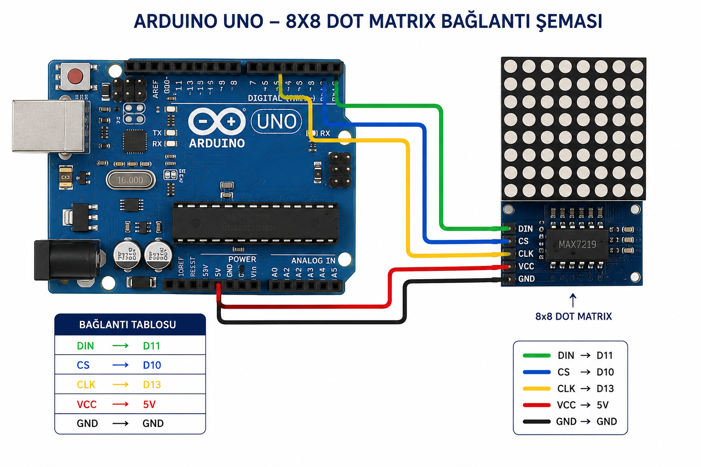

Spotify'da çalan şarkıları gerçek zamanlı olarak Arduino Uno ve MAX7219 Dot Matrix üzerinde gösteren proje.
Spotify Dot Matrix projesinde Arduino Uno ile MAX7219 tabanlı 8x8 LED Dot Matrix modülü SPI haberleşmesi kullanılarak bağlanmaktadır.

#include <MD_Parola.h>
#include <MD_MAX72xx.h>
#include <SPI.h>
#define HARDWARE_TYPE MD_MAX72XX::FC16_HW
#define MAX_DEVICES 1
#define DATA_PIN 11
#define CLK_PIN 13
#define CS_PIN 10
MD_Parola ekran =
MD_Parola(
HARDWARE_TYPE,
DATA_PIN,
CLK_PIN,
CS_PIN,
MAX_DEVICES
);
String gelenMesaj = "Spotify Hazir";
void setup()
{
Serial.begin(9600);
ekran.begin();
ekran.setIntensity(5);
ekran.displayClear();
}
void loop()
{
if (Serial.available())
{
gelenMesaj =
Serial.readStringUntil('\n');
}
if (ekran.displayAnimate())
{
ekran.displayText(
gelenMesaj.c_str(),
PA_LEFT,
60,
0,
PA_SCROLL_LEFT,
PA_SCROLL_LEFT
);
}
}